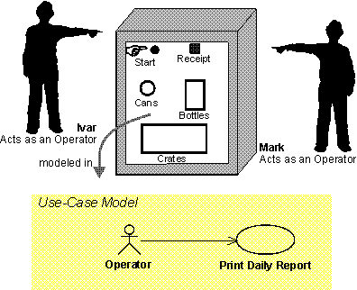

| Artifact: Actor |
 |
|
Different Stakeholders use this artifact for different purposes:
|
| Container Artifact |
|
|
|---|---|---|
| Roles | Responsible: | Modified By: |
| Tasks | Input To: | Output From: |
| Main Description | To fully understand the system's purpose, you must know who the system is for, that is: Who will use the system? Actors represent different types of users. An actor is anyone or anything that exchanges data with the system. Therefore, an actor can be a user, external hardware, or another system. The difference between an actor and an individual system user is that an actor represents a particular class of users, rather than an actual user. Several users can play the same role, which means that they can be the same, single actor. In that case, each individual user constitutes an instance of the actor.  As an illustration, Ivar and Mark are operators of a recycling machine. When they are using the machine, each is represented by an instance of the actor called Operator. However, in some situations, only one person plays the role modeled by an actor. For example, there may be only one individual in the role of system administrator for a rather small system. The same user can also act as several actors (that is, the same person can take on different roles).
Charlie uses the Depot-Handling System primarily as Depot Manager, but sometimes he also uses the Depot-Handling System as an ordinary Depot Staff member. For each Actor identified, document the name and brief description. It is also necessary to capture the Use Cases that this Actor initiates and those in which the Actor plays a secondary role. |
|---|

| Impact of not having | If you do not use this artifact, important Stakeholder perspectives may not be taken into account. This will result in a solution that does not meet all users' needs. It will be very difficult, if not impossible, to assess the completeness of the set of Use Cases without the context provided by the associated Actors. |
|---|---|
| Representation Options | If your project is using a Use Case model, there is no need for a separate representation for Actors other than in the Use Case model and in the Use Case specification. The simplest method is to capture the Actor's name and a its brief description in a table. Include a list of the Use Cases that this Actor initiates, as well as the Use Cases in which the actor participates in a secondary role. See the discussion of the Actor-Goal-List in Guideline: Use Case Formats for more information on this representation option. |
| Checklists | |
|---|---|
| Guidelines |
This program and the accompanying materials are made available under the View copyright information here: OpenUP Copyright |